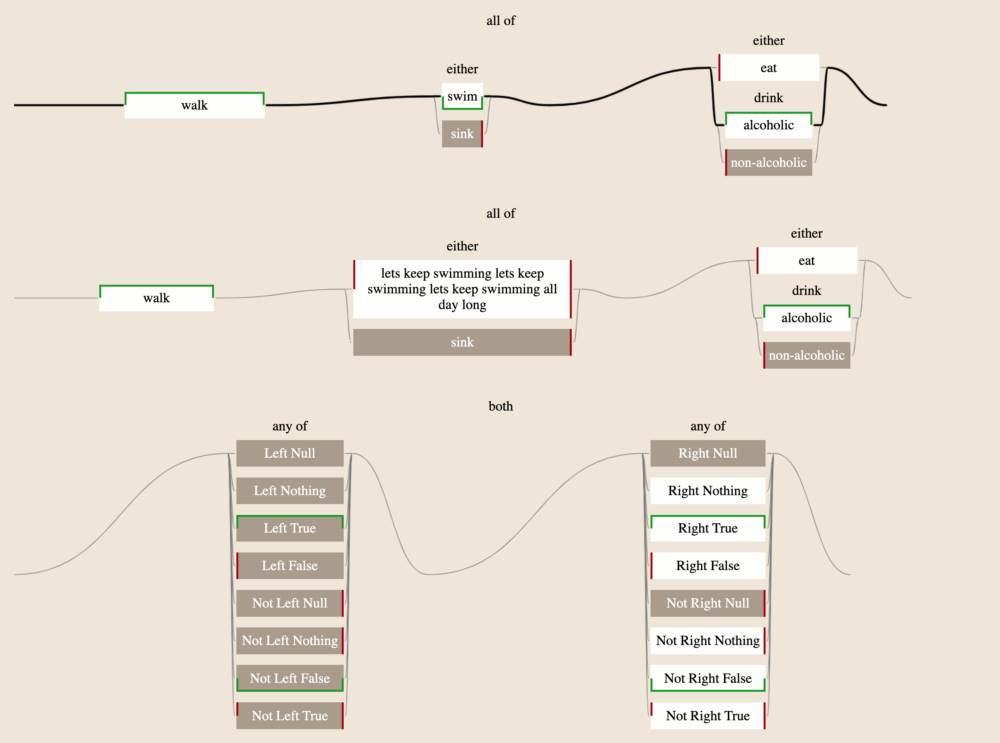

ladder.js
Visualise boolean circuits
- composed from combinators AND OR NOT
- labeled with markings known (user-provided) and unknown (default)
- values being TRUE FALSE UNKNOWN
Available as:
For background, see:
Install
npm install ladder-diagram
Usage
This code generates a diagram that visualises the boolean expression:
walk |
swim |
sink |
eat |
alcohol |
non-alcohol |
|
|---|---|---|---|---|---|---|
| Default Value | - | F | - | - | - | F |
| Known Value | T | F | - | F | T | - |
<html>
<head>
<!-- Path to the style sheet for this codebase -->
<link rel="stylesheet" href="./node_modules/ladder-diagram/css/ladder.css">
</head>
<body>
<!--
Diagram will be generated as a child of this DOM element.
The diagram scales with the font-size
-->
<div id="test" style="font-size:1.5em;"></div>
<script type="module">
// Path to the main js file
import {
BoolVar, AllQuantifier, AnyQuantifier, LadderDiagram
} from "./node_modules/ladder-diagram/js/ladder.js"
let circuit = new AllQuantifier([
new BoolVar("walk", false, null, 'T'),
new AnyQuantifier([
new BoolVar("swim", true, 'F', 'F'),
new BoolVar("sink", true),
]),
new AnyQuantifier([
new BoolVar("eat", false, null, 'F'),
new AnyQuantifier([
new BoolVar("alcoholic", false, null, 'T'),
new BoolVar("non-alcoholic", false, 'F')
],
"drink")
])
])
window.diagram = new LadderDiagram(
document.getElementById("test"),
circuit,
"Corners" // Box styling
)
</script>
</body>
</html>
Given the known values of each boolean variable, the resulting expression evaluates to True, and the diagram highlights a "path" that explains the truth value of the expression.

Corners vs Sides Styling
To enable an alternative box styling, change the box_style argument to "Sides":
new LadderDiagram(
document.getElementById("test"),
circuit,
"Sides" // Box styling
)
This alternative design marks the sides instead of the corners, according to the original spec.
Developing
Install dependencies:
npm install http-server -g
npm install jsdoc -g
- Testing:
npm run test - Building documentation:
npm run docs